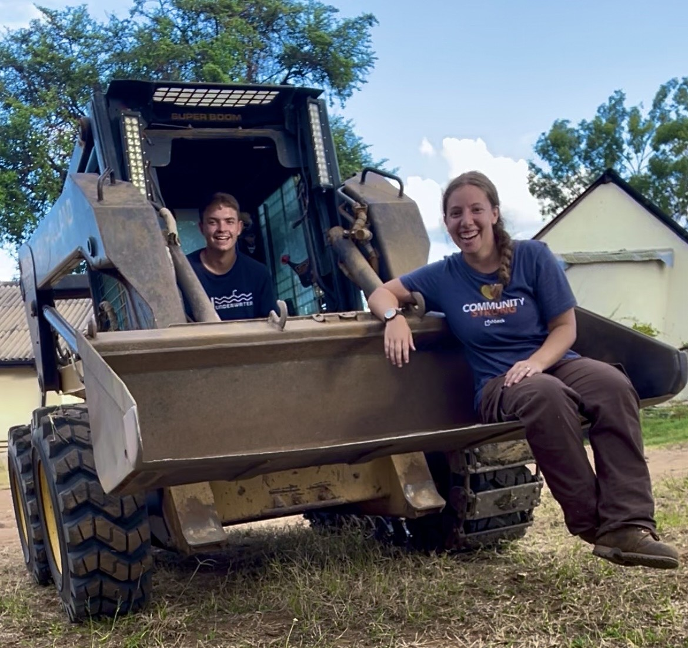

About Us
We are Ben and Brianna Schultz, serving Christ as engineers and missionaries in Zimbabwe at Karanda Mission Hospital.
Who We Are

We are Ben and Brianna Schultz, and we are excited to serve Christ through engineering and missions in Zimbabwe.
Our ministry is based at Karanda Mission Hospital, where we have the opportunity to serve alongside the hospital staff and the broader mission community.
Our Calling
This is where we can tell the story of how God led us toward missions and eventually to serving in Zimbabwe.
Our Mission
Our desire is to serve Christ by using the skills, opportunities, and relationships God has given us to support the ministry of Karanda Mission Hospital.
Through our work and relationships at Karanda, we hope to contribute to the hospital's mission of caring for people and sharing the love of Christ.
Karanda Mission Hospital: Serving God Serving Others
Karanda Mission Hospital demonstrates Christ's love by providing essential healthcare to patients in need from not only across remote Zimbabwe but also from neighboring Mozambique, Zambia, and Botswana. With 150 beds, it handles 3,800 surgeries each year over 2,000 deliveries, and treats various conditions, including HIV/AIDS. In 2025 the hospital provided almost 140,000 outpatient services and had 7,500 inpatient admissions.
Learn more about Karanda Mission Hospital at www.karanda.org
Engineering & Ministry
Our engineering work allows us to serve the hospital in practical ways while working alongside the people who make up the Karanda community.
Meet Us
Want to hear more about who we are and why we are serving in Zimbabwe?
Our introduction video will be added here.
Follow Our Journey
If you'd like to stay connected with our ministry, you can follow our updates or find us on social media.